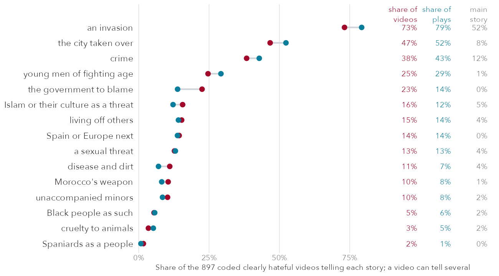
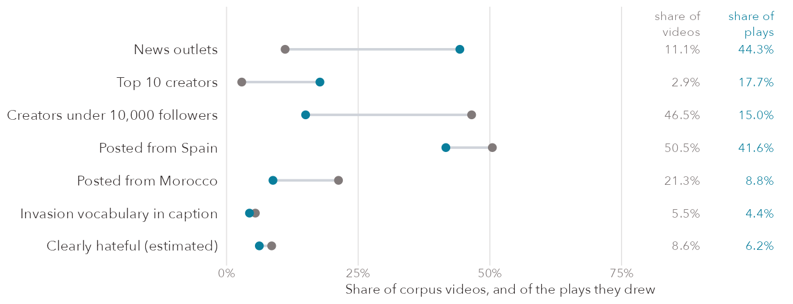
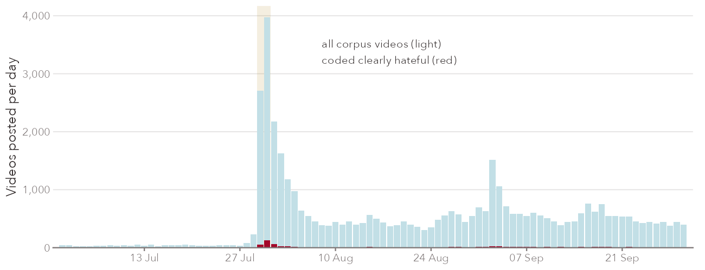
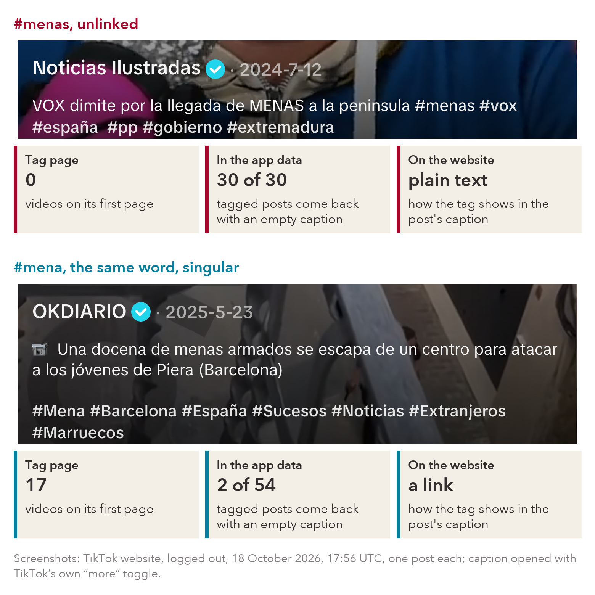

Community-led audit · Eticas Foundation & Institut de les Desigualtats
Do human and algorithmic spread of hate speech differ, and do platforms show people hate they didn’t look for?
From outside, no one can see why a platform showed a video, so we cannot say what the algorithms did. What the public counts show is that hate spread widely and appears to have had little moderation from the platforms. The clearly hateful videos we found drew 200 million plays, and TikTok had put a warning or sharing limit on 12 of 897. At the top of X, 30% of posts were clearly hateful, with 29% of the views.
“Clearly hateful” means attacking, dehumanising or generalising negatively about people for their religion, ethnicity, race, nationality or migration status. A language model coded the content; no person hand-coded it.
TikTokand 8.5% more borderline: hostile by insinuation, not counted as hate. They drew 6% of the plays, 13% with borderline ones.
All 897 were up when last read, a median 56 days after posting; anything removed before collection began is missing. A check of their accounts on 19 October found three gone and three probably gone.
27 of 108 hashtags are unlinked: their tag page is empty although videos carry the tag. They include #الانتخابات, #menas, #remigration, #haraga, #grandremplacement. View counts show no sign these videos were held back (1.35 times their creators’ usual plays).
A median of 4.7 shares and 2.5 comments per 1,000 plays, against 2.5 and 1.1. Posting about Ceuta earned plays (2.24 times a creator’s other posts); hate earned none on top.
6.8% of replies in long threads were clearly hateful, against 0.3% of top comments.
29% of the plays on clearly hateful videos (outlets drew 44% of all plays). OKDIARIO, whose whole feed we read, drew 17%.
48% of it was in the speech, the on-screen text or the images. Read alone, captions missed 74% of it.
Videos posted 30 July to 2 August drew 50% of the plays.
The top of X: 3,140 posts with 5,000 or more likes, from 1,067 accounts. The partner’s accounts: 21 accounts from the partner’s list, 5,513 posts.
47% against 21%. The targets were migrants and asylum seekers, then Moroccans, then Muslims.
24% of their posts were clearly hateful, from 4% to 56% among those with 20+ posts.
30% of X’s top posts were clearly hateful, against 8.5% of TikTok’s most-played videos. In Spanish the gap is smaller: 21% against 13%.
73% of TikTok’s clearly hateful videos and 74% of X’s clearly hateful top posts did. 8% of those videos and 5% of those posts called for violence.
The ten accounts with the most plays or views on hate drew about a third of them: 33% on TikTok, 36% at the top of X.
Figures from the report. More in the full report.




The same definition and coder on both platforms.
| Measure | TikTok | Top of X |
|---|---|---|
| Clearly hateful: TikTok’s most-played videos, X’s posts with 5,000+ likes | 8.5% | 30% |
| Clearly hateful, Spanish only (TikTok: posted from Spain; X: in Spanish) | 13% | 21% |
| Borderline: TikTok’s most-played videos, X’s posts with 5,000+ likes | 8% | 10% |
| Plays (TikTok’s coded videos) or views (X’s top posts) on clearly hateful items | 6% | 29% |
| The same on hateful and borderline items | 13% | 39% |
| Top 10 accounts’ share of the plays or views on clearly hateful items | 33% | 36% |
| Clearly hateful items telling the arrival as an invasion | 73% | 74% |
| Clearly hateful items calling for violence | 8% | 5% |
| Seen more times than the author has followers: most-played videos, top posts | 71% | 52% |
| The same, clearly hateful ones only | 77% | 44% |
| Claims Ceuta for Morocco | 5% | 1% |
| Pushes back on the hostility | 7% | 5% |
The top of X: the 3,140 posts with 5,000+ likes that name the place as the TikTok videos do. TikTok: its most-played videos where the row says so, otherwise the coded videos. Source: report, Section 7.
Method, findings by section, limitations and sources. Signal4 Analyses for Eticas Foundation.
Work-in-progress text by Eticas Foundation and the Institut de les Desigualtats, ahead of the 29 November elections.
The aggregate tables behind every chart, and every number the report prints.
All published files, the codebook with the exact prompts, and this site's source.